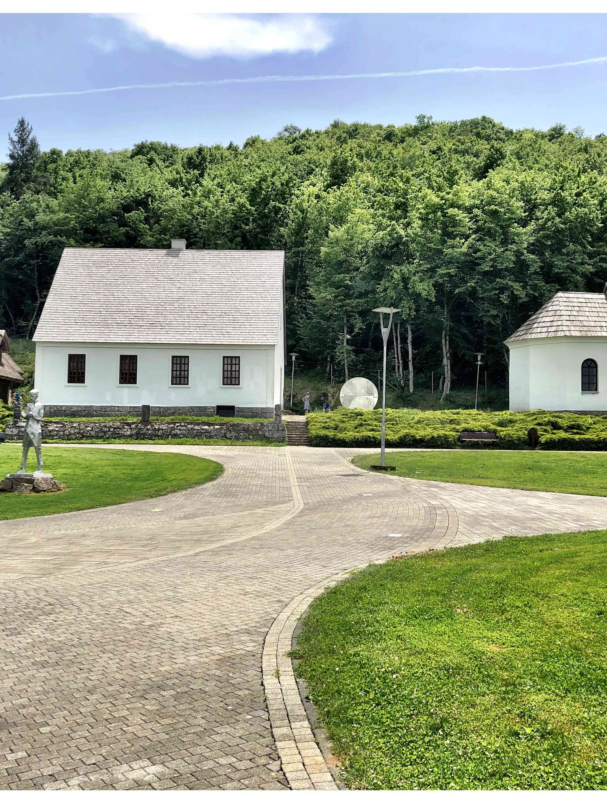
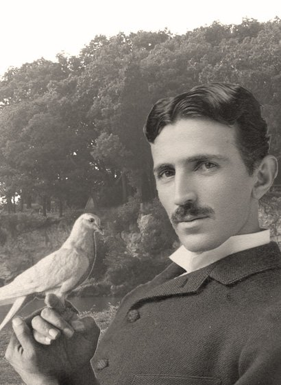
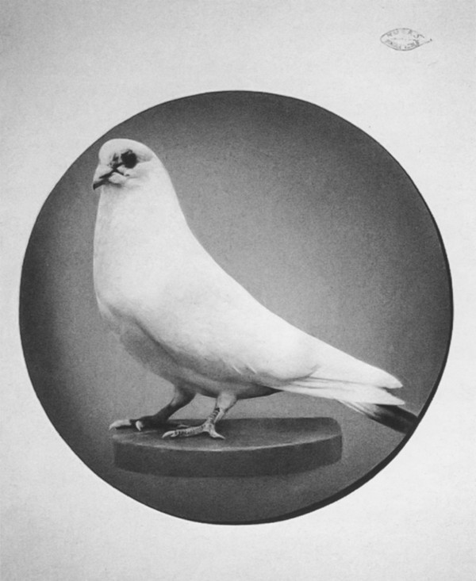

Nikola Tesla เกิดเมื่อวันที่ 10 กรกฎาคม 1856 ในหมู่บ้าน Smiljan ในจักรวรรดิออสเตรีย (ตอนนี้โครเอเชีย) กับพ่อของเซอร์เบียของเขา Milutin เทสลานั้นตะวันออกออร์โธดอกพระสงฆ์ และแม่ของเขา Djuka Tesla ผู้คิดค้นเครื่องใช้ในครัวเรือนขนาดเล็กและมีความสามารถใน เพื่อจดจำบทกวีมหากาพย์ของเซอร์เบียที่มีความยาว Tesla ให้เครดิตแม่ของเขา เพราะเขาสนใจในการประดิษฐ์และถ่ายภาพความทรงจำ เขามีพี่น้องสี่คนคือพี่ชายเดนและน้องสาวแองเจลิน่ามิลก้าและมาริก้า
ในปีพ. ศ. 2413 เทสลาเริ่มเรียนมัธยมปลายที่โรงยิมระดับสูงในเมืองคาร์โลแวกประเทศออสเตรีย เขาจำได้ว่าการสาธิตไฟฟ้าของครูฟิสิกส์ของเขาทำให้เขาอยาก“ รู้จักพลังมหัศจรรย์นี้ให้มากขึ้น” สามารถทำแคลคูลัสเชิงปริพันธ์ได้ในหัวของเขา Tesla เรียนจบมัธยมปลายในเวลาเพียงสามปีจบการศึกษาในปี พ.ศ. 2416
ด้วยความมุ่งมั่นที่จะประกอบอาชีพด้านวิศวกรรม Tesla เข้าเรียนที่สถาบันโปลีเทคนิคแห่งออสเตรียในเมืองกราซประเทศออสเตรียในปี พ.ศ. 2418 ที่นี่ Tesla ได้ศึกษาเครื่องกำเนิดไฟฟ้า Gramme ซึ่งเป็นเครื่องกำเนิดไฟฟ้าที่ผลิตกระแสตรง จากการสังเกตว่าไดนาโมทำงานเหมือนมอเตอร์ไฟฟ้าเมื่อทิศทาง ของกระแสไฟฟ้ากลับด้านเทสลาจึงเริ่มคิดหาวิธีที่สามารถใช้กระแสสลับนี้ในงานอุตสาหกรรมได้ แม้ว่าเขาจะเรียนไม่จบ แต่ก็ไม่ใช่เรื่องแปลก แต่ตอนนั้น Tesla ได้คะแนนดีเยี่ยมและยังได้รับจดหมายจากคณบดีคณะเทคนิคที่ส่งถึงพ่อของเขาโดยระบุว่า“ ลูกชายของคุณเป็นดาราอันดับหนึ่ง”
รู้สึกว่าความบริสุทธิ์ทางเพศจะช่วยให้เขามุ่งเน้นไปที่อาชีพของเขา Tesla ไม่เคยแต่งงานหรือมีความสัมพันธ์ที่โรแมนติกใด ๆ ในหนังสือปี 2001 ของเธอ“ Tesla: Man Out of Time ” ผู้เขียนชีวประวัติ Margaret Cheney เขียนว่า Tesla รู้สึกว่าตัวเองไม่คู่ควรกับผู้หญิงโดยพิจารณาว่าพวกเธอเหนือกว่าเขาในทุก ๆ ด้าน อย่างไรก็ตามในช่วงหลังของชีวิตเขาแสดงความ ไม่ชอบอย่างรุนแรงต่อสิ่งที่เขาเรียกว่า "ผู้หญิงคนใหม่" ผู้หญิงที่เขารู้สึกว่ากำลังละทิ้งความเป็นผู้หญิงเพื่อพยายามครอบงำผู้ชาย
แต่เรื่องประหลาดก็คือเขากลับเป็นมิตรกับนกพิราบอย่างยิ่งไม่ใช่นกพิราบตัวใดตัวหนึ่งแต่คือนกพิราบทั้งหลายแหล่ที่บินว่อนอยู่ตามที่สาธารณะ ทั้งในเซ็นทรัลปาร์ค และไบรอันท์ปาร์ค หน้าห้องสมุดกลางของนิวยอร์ก
เทสลาเอาอาหารไปเลี้ยงนกพิราบที่เฮรัลด์สแควร์ ในไบรอันท์ปาร์ค อันเป็นลานกว้างหน้าห้องสมุดกลางของนิวยอร์คติดต่อกันเป็นเวลานานเกือบสามสิบปี ไม่—เขาไม่ได้ไปในเวลากลางวัน เทสลามักไปที่นั่นหลังเที่ยงคืน
คล้ายว่ายามนั้นมีมนตราบางอย่างสำหรับเขา เขาจะส่งเสียงผิวปากเบาๆ แล้วนกพิราบก็จะมารายล้อม บางตัวมาเกาะที่บ่าและบนศีรษะ บางตัวก็เกาะแขนเขา เพื่อจิกกินเมล็ดพืชที่เขานำมาเลี้ยงแน่นอน นกพิราบเหล่านี้ไม่สะอาดเลย มันมีทั้งไร และเป็นพาหะนำเชื้อโรคต่างๆ ดังนั้น เทสลาผู้เกลียดความสกปรกจึงน่าจะไม่ชอบพวกมัน
คล้ายว่ายามนั้นมีมนตราบางอย่างสำหรับเขา เขาจะส่งเสียงผิวปากเบาๆ แล้วนกพิราบก็จะมารายล้อม บางตัวมาเกาะที่บ่าและบนศีรษะ บางตัวก็เกาะแขนเขา เพื่อจิกกินเมล็ดพืชที่เขานำมาเลี้ยงแน่นอน นกพิราบเหล่านี้ไม่สะอาดเลย เขาไม่ชอบจับมือกับคน เขาล้างมือบ่อยครั้งมาก เขาไม่อนุญาตให้ใครเข้ามาในห้องพักของเขา แต่ถ้าจำเป็น คนที่เข้ามาจะต้องอยู่ห่างเขาอย่างน้อยสามฟุต เขาไม่เคยแต่งงาน ว่ากันว่า เขาไม่เคยมีเพศสัมพันธ์กับใครเสียด้วยซ้ำ วลาที่มีพนักงานส่งของนำของมาให้ เขาจะต้องฉีดสเปรย์ฆ่าเชื้อโรคเสียก่อนที่จะรับของเหล่านั้น เวลากินอาหาร เขาก็ไม่ยอมให้ใครมายืนใกล้ๆ
คล้ายว่ายามนั้นมีมนตราบางอย่างสำหรับเขา เขาจะส่งเสียงผิวปากเบาๆ แล้วนกพิราบก็จะมารายล้อม บางตัวมาเกาะที่บ่าและบนศีรษะ บางตัวก็เกาะแขนเขา เพื่อจิกกินเมล็ดพืชที่เขานำมาเลี้ยงแน่นอน นกพิราบเหล่านี้ไม่สะอาดเลย ทุกครั้งที่ไปกินอาหาร พนักงานจะต้องปูผ้าปูโต๊ะผืนใหม่เสมอ รวมทั้งต้องใช้ผ้าผืนพิเศษมาเช็ดจาน ช้อน ส้อม และมีด และเมื่อเช็ดแล้ว ก็ต้องทิ้งผ้าผืนนั้นไปเลย ในครัวต้องสเตอริไลซ์เครื่องใช้บนโต๊ะอาหารให้เขาเสมอ หากมีแมลงวันบินมาใกล้ ทั้งมื้อนั้นต้องทำใหม่หมดทันที เขาใช้กางเกงในสีขาวเท่านั้น และเมื่อใช้เสร็จแล้วในหนึ่งวัน ก็จะทิ้งกางเกงในนั้นไปเลย ผ้าเช็ดหน้าก็เช่นกัน ไม่เคยมีใครต้องซักผ้าเช็ดหน้าให้เขา เพราะเขาจะทิ้งไปทันทีหลังใช้เสร็จในวันนั้น
ดังนั้น เขาจึงไม่น่าจะชอบนกพิราบ—นกอันเป็นพาหะ
แต่ไม่เลย เทสลาไม่สนใจไรนก ไม่สนใจโรคต่างๆ ที่อาจติดมากับนก
เขารักพวกมัน โดยเฉพาะกับนกพิราบขาวตัวหนึ่ง เขาพบว่ามันบาดเจ็บ ปีกและขาหัก มันบินไม่ได้ เทสลาพามันไปรักษาอาการบาดเจ็บ โดยจ่ายเงินรวมแล้วมากกว่า 2,000 เหรียญ ทั้งยังคิดค้นเครื่องมือช่วยพยุงกระดูกของนกพิราบตัวนั้น เพื่อที่มันจะได้หายดีจากอาการปีกและขาหักด้วย
เมื่อนกตัวนั้นสบายดีแล้ว มันติดตามเขาไปทุกหนแห่ง เขาบอกว่า เพียงนึกถึง นกตัวนั้นก็จะมาหาเขา เขาเห็นว่า นกพิราบตัวนั้นคือนกนำโชค คือกำลังใจ คือความรัก ไม่ว่าเขาจะทำอะไร ไม่ว่าสิ่งนั้นจะทะเยอทะยานหรือยากเย็นเพียงใด ถ้าหากนกพิราบตัวนั้นอยู่ด้วย เขาจะทำสำเร็จเสมอ
เทสลาถึงกับเชื่อว่า หากนกพิราบตัวนั้นตายไป—ชีวิตของเขาก็จะสูญสิ้นไปด้วย เว้นเสียแต่ว่า นกพิราบตัวนั้นจะกลับมาเกิดใหม่
แต่ปัญหาก็คือ เทสลาเชื่อว่า วิญญาณจะสูญสิ้นไปพร้อมกับร่างกาย หลังความตายไม่มีอะไร ดังนั้น การกลับมาเกิดใหม่จึงเป็นเรื่องที่เป็นไปไม่ได้
ไม่ว่าเขาจะพักอยู่ที่โรงแรมไหนในนิวยอร์ก เขาจะเปิดหน้าต่างห้องเอาไว้เสมอ เพื่อให้นกพิราบสามารถบินเข้าออกได้ทุกเมื่อที่พวกมันต้องการ เขาจัดที่ทำรังไว้ให้ วางเมล็ดพืชที่เป็นอาหารไว้ให้ ซึ่งก็แน่นอน—นี่เป็นอีกสาเหตุหนึ่งที่ทำให้เขาต้องย้ายโรงแรมบ่อยครั้ง พราะทางโรงแรมย่อมไม่พึงพอใจกับความสกปรกเลอะเทอะที่ได้พบจากนกพิราบ
แล้ววันหนึ่ง นกพิราบขาวตัวนั้นก็บินมามันบินเข้ามาทางหน้าต่างที่เปิดกว้าง และร่อนถลาลงบนโต๊ะทำงานของเขา เทสลาลุกข้ึนและเดินไปหานกพิราบตัวนั้น เขารู้สึกว่ามีบางสิ่งสำคัญที่นกต้องการจะสื่อสาร ต้องการจะบอกเล่าให้เขาฟัง ใช่—นกตัวนั้นกำลังจะตาย
เทสลายังคงนำอาหารไปเลี้ยงนกพิราบในสวนอยู่เสมอ เขาไร้ชีวิตจิตใจมากขึ้นเรื่อยๆ และบอกกับเพื่อนว่า—ใครจะไปรู้…
เขาอาจหมายความว่า—ใครจะไปรู้เล่าว่านกพิราบตัวที่เขารักที่สุดนั้นจะกลับมาเกิดใหม่อีกครั้งเป็นนกพิราบตัวอื่นหรือเปล่า แต่เราก็ไม่รู้แน่ ไม่มีวันรู้แน่ เช่นเดียวกับที่เขาก็ไม่มีวันรู้แน่ว่าการเกิดใหม่คืออะไร ในฤดูใบไม้ร่วงของปีค.ศ. 1937 เทสลาเดินออกจากโรงแรมนิวยอร์กเกอร์ตามปกติ เขาเดินข้ามถนน เขาอาจกำลังมุ่งหน้าไปยังสถานที่เลี้ยงนกพิราบดังที่ทำเสมอมาก็ได้ แต่คราวนี้เกิดสิ่งไม่ธรรมดาขึ้น
รถแท็กซี่คันหนึ่งพุ่งเข้าชนเขาจนล้มลงไปกับพื้น ว่ากันว่า เขาได้รับบาดเจ็บหนักที่หลัง และซี่โครงหักสามซี่ แต่ก็ไม่มีใครรู้แน่—ว่าเขาเจ็บมากเพียงใด เพราะเทสลาไม่ยอมไปหาหมอ
ตอนนั้น เขาอายุ 81 ปีแล้ว และไม่เคยฟื้นตัวจากอาการบาดเจ็บนั้นจริงๆ เลย จนกระทั่งถึงวันที่เขาเสียชีวิตในวันที่ 7 มกราคม ค.ศ. 1943 คืออีกหกปีถัดมาหลังอุบัติเหตุ
เทสลาคือชายผู้โดดเดี่ยวเขาอาจรักความโดดเดี่ยวมากพอๆ กับนกพิราบก็ได้ เขาใช้เวลาส่วนใหญ่เป็นคนนอกของสังคม ไม่พบปะใคร เขามีความสุขมากกว่าที่ได้อยู่กับตัวเอง เฝ้าฝันกับสิ่งประดิษฐ์ต่างๆ อยู่ในเวิร์กช็อปและโต๊ะทำงาน ฝันถึงโลกที่ดีกว่า โลกที่สื่อสาร ส่องแสง และส่งต่อพลังงานได้โดยไร้สาย
หลังอุบัติเหตุ เทสลายิ่งใช้เวลาอยู่แต่ในห้องนานขึ้นเรื่อยๆห้องสุดท้ายที่เขาพำนักอยู่คือห้องหมายเลข 3327 บนชั้นที่ 33 ของโรงแรมนิวยอร์กเกอร์เขาแทบไม่รับแขก และกินแต่อาหารมังสวิรัติ นิโคลา เทสลา ชายผู้ยิ่งใหญ่—เลือกแล้วที่จะตายดังที่เขาปรารถนา นั่นคือการตายไปลำพัง โดดเดี่ยว และเงียบงัน
แม่บ้านของโรงแรม คือ อลิซ โมนากาน (Alice Monaghan) โทรเรียกตำรวจทันทีเมื่อพบว่าเขาไม่หายใจในเช้าวันนั้น เมื่อตำรวจมาถึง มีการชันสูตร แพทย์ประกาศการตายว่าเขาน่าจะเสียชีวิตมาต้ังแต่คืนวานแล้ว ด้วยอาการลิ่มเลือดอุดตันเส้นเลือดหัวใจ หรือ coronary thrombosis ลิ่มเลือดเช่นนี้จะเกิดขึ้นได้ มักเป็นเพราะเจ้าตัวมีไขมันในเลือดสูง โดยเฉพาะไขมันเลวอย่าง LDL แต่เทสลาไม่ดื่มชาหรือกาแฟ ดื่มเครื่องดื่มแอลกอฮอล์เพียงเล็กน้อยเบาบาง เขาไม่สูบบุหรี่ กินอาหารที่มีไขมันต่ำ และออกกำลังกายสม่ำเสมอ อย่างน้อยก็ด้วยการเดิน ที่จริงแล้ว เขาเคยให้สัมภาษณ์ด้วยซ้ำไปว่าเป็นคนรักการออกกำลังกาย ดังนั้น อาการนี้จึงไม่น่าจะเกิดขึ้นได้แต่มันก็เกิดขึ้นแล้ว—กับหัวใจ
เทสลาประดิษฐ์คิดค้นอะไรมากมาย เขาอาจไม่ได้ประดิษฐ์หลอดไฟ
แต่ก็คิดค้นไฟฟ้าแบบฟลูออเรสเซนต์และนีออน
รวมทั้งเป็นผู้อยู่เบื้องหลังกระแสไฟที่ใช้ในโลกปัจจุบันทั้งใบ
กระแสไฟที่ทำให้โลกสว่างไสว
บางทีอาจสว่างไสวยิ่งกว่าแสงที่พวยพุ่งออกมาจากดวงตาของนกพิราบตัวนั้น
เขาเป็นนักนึกภาพ ก่อนประดิษฐ์อะไรบางอย่าง
เขาจะใช้วิถีหยั่งรู้บางอย่างภายใน นึกภาพว่าสิ่งประดิษฐ์นั้นๆ จะเป็นอย่างไร จะทำอะไรได้ และจะยิ่งใหญ่มากเพียงใด นั่นคือวิธีที่เขาสร้างเครื่องจักรและสิ่งประดิษฐ์ต่างๆ ไม่ใช่บนกระดาษ แต่อยู่ในหัวของเขา เราไม่อาจรู้แน่ว่า เขาได้นึกภาพการตายของเขาเอาไว้ล่วงหน้าหรือเปล่า เรารู้แต่เพียงว่า—ชายผู้หลงรักนกพิราบคนนี้ได้เดินทางไปอยู่กับนกพิราบของเขา ในที่แห่งใดแห่งหนึ่ง ซึ่งอาจไม่มีทั้งการตายและการเกิดใหม่อีกต่อไป ที่ที่เราก็ไม่อาจรู้แน่—ว่าคือที่ไหน